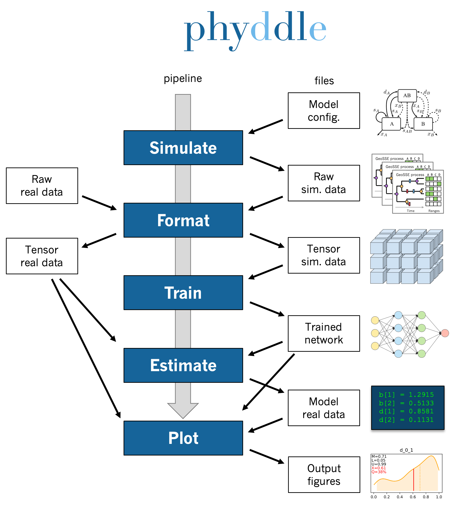

Pipeline
Note
This section describes how a standard phyddle pipeline analysis is configured and how settings determine the behavior of a phyddle analysis. Visit Configuration to learn how to assign settings for a phyddle analysis. Visit Glossary to learn more about how phyddle defines different terms
{kind=link}

A phyddle pipeline analysis has five steps: Simulate, Format, Train, Estimate, and Plot. Standard analyses run all steps, in order for a single batch of settings. That said, steps can be run multiple times under different settings and orders, which is useful for exploratory and advanced analyses. Visit Tricks to learn how to use phyddle to its fullest potential.
All pipeline steps create output files. All pipeline (except Simulate) also require input files corresponding to at least one other pipeline step. A full phyddle analysis for a project will automatically generate the input files for downstream pipeline steps and store them in a predictable project directory.
Users may also elect to use phyddle for only some steps in their analysis, and produce files for other steps by different means. For example, Format expects to format and combine large numbers of simulated datasets into tensor formats that can be used for supervised learning with neural networks. These simulated files can either be generated through phyddle with the Simulate step or outside of phyddle entirely.
Below is the project directory structure that a standard phyddle analysis
would use. In this section, we assume the project dir is
./workspace/example:
Simulate
- input: None
- output: ./workspace/example/simulate # simulated datasets
Format
- input: ./workspace/example/simulate # simulated datasets
./workspace/example/empirical # empirical datasets
- output: ./workspace/example/format # formatted datasets
Train
- input: ./workspace/example/format # simulated training dataset
- output: ./workspace/example/train # trained network + train results
Estimate
- input: ./workspace/example/format # simulated test + empirical datasets
./workspace/example/train # trained network
- output: ./workspace/example/estimate # test + empirical results
Plot
- input: ./workspace/example/format # simulated training dataset
./workspace/example/train # trained network and output
./workspace/example/estimate # simulated + empirical estimates
- output: ./workspace/example/plot # analysis figures
Simulate
Simulate instructs phyddle to simulate your training dataset. Any simulator that can be called from command-line can be used to generate training datasets with phyddle. This allows researchers to use their favorite simulator with phyddle for phylogenetic modeling tasks.
As a worked example, suppose we have an R script called sim_bisse.R containing
the following code
#!/usr/bin/env Rscript
library(castor)
library(ape)
# disable warnings
options(warn = -1)
# example command string to simulate for "sim.1" through "sim.10"
# cd ~/projects/phyddle/workspace/example
# Rscript sim_bisse.R ./simulate example 1 10
# arguments
args = commandArgs(trailingOnly = TRUE)
out_path = args[1]
out_prefix = args[2]
start_idx = as.numeric(args[3])
batch_size = as.numeric(args[4])
rep_idx = start_idx:(start_idx+batch_size-1)
num_rep = length(rep_idx)
get_mle = FALSE
# filesystem
tmp_fn = paste0(out_path, "/", out_prefix, ".", rep_idx) # sim path prefix
phy_fn = paste0(tmp_fn, ".tre") # newick file
dat_fn = paste0(tmp_fn, ".dat.csv") # csv of data
lbl_fn = paste0(tmp_fn, ".labels.csv") # csv of labels (e.g. params)
# dataset setup
num_states = 2
tree_width = 500
label_names = c(paste0("log10_birth_",1:num_states),
"log10_death", "log10_state_rate", "sample_frac")
# simulate each replicate
for (i in 1:num_rep) {
# set RNG seed
set.seed(rep_idx[i])
# rejection sample
num_taxa = 0
while (num_taxa < 10) {
# simulation conditions
max_taxa = runif(1, 10, 5000)
max_time = runif(1, 1, 100)
sample_frac = 1.0
if (max_taxa > tree_width) {
sample_frac = tree_width / max_taxa
}
# simulate parameters
Q = get_random_mk_transition_matrix(num_states, rate_model="ER",
max_rate=0.1)
birth = runif(num_states, 0, 1)
death = min(birth) * runif(1, 0, 1.0)
death = rep(death, num_states)
parameters = list(
birth_rates=birth,
death_rates=death,
transition_matrix_A=Q
)
# simulate tree/data
res_sim = simulate_dsse(
Nstates=num_states,
parameters=parameters,
sampling_fractions=sample_frac,
max_extant_tips=max_taxa,
max_time=max_time,
include_labels=T,
no_full_extinction=T)
# check if tree is valid
num_taxa = length(res_sim$tree$tip.label)
}
# save tree
tree_sim = res_sim$tree
write.tree(tree_sim, file=phy_fn[i])
# save data
state_sim = res_sim$tip_states - 1
df_state = data.frame(taxa=tree_sim$tip.label, data=state_sim)
write.csv(df_state, file=dat_fn[i], row.names=F, quote=F)
# save learned labels (e.g. estimated data-generating parameters)
label_sim = c(birth[1], birth[2], death[1], Q[1,2], sample_frac)
label_sim = log(label_sim, base=10)
names(label_sim) = label_names
df_label = data.frame(t(label_sim))
write.csv(df_label, file=lbl_fn[i], row.names=F, quote=F)
}
# done!
quit()
This particular script has a few important features. First, the simulator is
entirely responsible for simulating the dataset. Second, the script assumes it
will be provided runtime arguments (args`) to generate filenames and to
determine how many simulated datasets will be generated when the script is run
(more details in next paragraph). Third, output for the Newick string is stored
into a .tre file, for the character matrix data into a .dat.csv file,
and for the training labels into a comma-separated .csv file.
Now that we understand the script, we need to configure phyddle to call it
properly. This is done by setting the sim_command argument equal to a
command string of the form MY_COMMAND [MY_COMMAND_ARGUMENTS]. During
simulation, phyddle executes the command string against different filepath
locations. More specifically, phyddle will execute the command
MY_COMMAND [MY_COMMAND_ARGUMENTS] [SIM_DIR] [SIM_PREFIX], where SIM_DIR
is the path to the directory locating the individual simulated datasets, and
SIM_PREFIX is a common prefix shared by individual simulation files. As
part of the Simulate step, phyddle will execute the command string to generate
the complete simulated dataset of replicated training examples.
In this case, we assume that sim_bisse.R is an R script that is located in the same directory as config.py and can be executed using the Rscript command. The correct sim_command value to run this script is:
'sim_command' : 'Rscript ./sim_bisse.R'
Assuming sim_dir = './simulate', sim_prefix = 'sim'
sim_batch_size = 10, phyddle will execute the commands during simulation
Rscript sim_one.R ./simulate/ sim 0 10
Rscript sim_one.R ./simulate/ sim 10 10
Rscript sim_one.R ./simulate/ sim 20 10
...
for every replication index between start_idx and end_idx in
increments of sim_batch_size, where the R script itself is responsible
for generating the sim_batch_size replicates per batch. In fact,
executing Rscript sim_bisse.R ./simulate/ sim 1 10
from terminal is an ideal way to validate that your custom simulator is
compatible with the phyddle requirements.
Format
Format converts simulated and/or empirical data for a project into a tensor format that phyddle uses to train neural networks in the Train step. Format performs two main tasks:
Encode all individual raw datasets in the simulate and empirical project directory into individual tensor representations
Combines all the individual tensors into larger, singular tensors that can be processed by the neural network
For each example, Format encodes the raw data into two input tensors and one output tensor:
One input tensor is the phylogenetic-state tensor. Loosely speaking, these tensors contain information associated with clades across rows and information about relevant branch lengths and states per taxon across columns. The phylogenetic-state tensors used by phyddle are based on the compact bijective ladderized vector (CBLV) format of Voznica et al. (2022) and the compact diversity-reordered vector (CDV) format of Lambert et al. (2022) that incorporates tip states (CBLV+S and CDV+S) using the technique described in Thompson et al. (2022).
The second input is the auxiliary data tensor. This tensor contains summary statistics for the phylogeny and character data matrix and “known” parameters for the data generating process.
The output tensor reports labels that are generally unknown data generating parameters to be estimated using the neural network. Depending on the estimation task, all or only some model parameters might be treated as labels for training and estimation.
For most purposes within phyddle, it is safe to think of a tensor as an n-dimensional array, such as a 1-d vector or a 2-d matrix. The tensor encoding ensures training examples share a standard shape (e.g. numbers of rows and columns) that helps the neural network to detect predictable data patterns. Learn more about the formats of phyddle tensors on the Tensor Formats page.
During tensor-encoding, Format processes the tree, data matrix, and
model parameters for each replicate. This is done in parallel, when the setting
use_parallel is set to True. Simulated data are processed using CBLV+S
format if tree_encode is set to 'serial'. If tree_encode is set to
'extant' then all non-extant taxa are pruned, saved as pruned.tre, then
encoded using CDV+S. Standard CBLV+S and CDV+S formats are used when
brlen_encode is 'height_only', while additional branch length
information is added as rows when brlen_encode is set to
'height_brlen'. Each tree is then encoded into a phylogenetic-state tensor
with a maximum of tree_width sampled taxa. Trees that contain more taxa are
downsampled to tree_width taxa. The number of taxa in each original dataset
is recorded in the summary statistics, allowing the trained network to
make estimates on trees that are larger or smaller than th exact tree_width
size.
The phylogenetic-state tensors and auxiliary data tensors are then created. If
save_phyenc_csv is set, then individual csv files are saved for each
dataset, which is especially useful for formatting new empirical datasets into
an accepted phyddle format.
The param_est setting identifies which “unknown”
parameters in the labels tensor you want to treat as downstream estimation
targets. The param_data setting identifies which of those parameters you
want to treat as “known” auxiliary data.
# Settings in config.py
# "unknown" parameters to estimate
'param_est' : {
'log10_birth_rate' : 'num',
'log10_death_rate' : 'num',
'log10_transition_matrix' : 'num',
'model_type' : 'cat',
'root_state' : 'cat'
}
# "known" parameters to use as auxiliary data
'param_data' : {
'sample_frac' : 'num'
}
Information for param_est and param_data are each stored as dictionaries.
The keys are the names of the parameters (labels) generated by the Simulate
step. The values are the data types of the parameters. Data types may be either
'num' for numerical parameters, or 'cat' for categorical parameters.
Note
Numerical parameters have ordered values that are negative, positive, or zero. We recommend that you transform bounded numerical parameters into unbounded values for use with phyddle. For example, although an evolutionary rate parameter is non-negative, the log of that rate can be negative, positive, or zero.
Note
Categorical parameters have unordered values. They are encoded using
base-0 sequential integers. For example, the nucleotides for an ancestral
state estimation task would use 0, 1, 2, 3 to represent A, C, G, T.
Lastly, Format creates a test dataset containing proportion test_prop of
all simulated examples, and a second training dataset that contains all
remaining 1.0 - test_prop examples.
Formatted tensors are then saved to disk either in simple comma-separated
value format or in a compressed HDF5 format. For example, suppose we set
fmt_dir to './format', fmt_prefix to 'out',
and tree_encode to 'serial'. If we set tensor_format == 'hdf5',
it produces:
./format/out.empirical.hdf5
./format/out.test.hdf5
./format/out.train.hdf5
or if tensor_format == 'csv':
./format/out.empirical.aux_data.csv
./format/out.empirical.labels.csv
./format/out.empirical.phy_data.csv
./format/out.test.aux_data.csv
./format/out.test.labels.csv
./format/out.test.phy_data.csv
./format/out.train.aux_data.csv
./format/out.train.labels.csv
./format/out.train.phy_data.csv
Format behaves the same way for simulated vs. empirical datasets,
except in two key ways. First, simulated datasets will be split into datasets
used to train the neural network and test its accuracy (in proportions defined
by test_prop), whereas empirical datasets are left whole. Second, simulated
datasets will contain labels for all data-generating parameters, meaning both
the “unknown” parameters that we want to estimate and the “known” parameters
that contribute to the data-generating process, but could be measured in the
real world. For example, the birth rate might be an “unknown” parameter we want
to estimate, while the missing proportion of species is a “known” parameter
that we can provide the network if we know e.g. only 10% of described
plant species are in the dataset.
When searching for empirical and simulated datasets, Format uses
emp_dir and sim_dir to locate the datasets. The emp_prefix and
sim_prefix settings are used to identify the datasets. Format
assumes that empirical datasets follow the naming pattern of
<prefix>.<rep_idx>.<ext> described for Simulate. For example,
setting emp_dir to '../dnds/empirical' and emp_prefix
to 'mammal_gene' will cause Format to search for files with
these names:
../dnds/empirical/mammal_gene.1.tre
../dnds/empirical/mammal_gene.1.dat.csv
../dnds/empirical/mammal_gene.1.labels.csv # if using known params
../dnds/empirical/mammal_gene.2.tre
../dnds/empirical/mammal_gene.2.dat.csv
../dnds/empirical/mammal_gene.2.labels.csv # if using known params
...
Using the --no_emp or --no_sim flags will instruct Format to
skip processing the empirical and simulated datasets, respectively. In
addition, Format will report that it is skipping the empirical and
simulated datasets if they do not exist.
Once complete, the formatted files can then be processed by the Train step and Estimate steps.
Train
Train builds a neural network and trains it to make model-based estimates using the simulated training example tensors compiled by the Format step.
The Train step performs six main tasks:
Load the input training example tensor.
Shuffle the input tensor and split it into training, test, validation, and calibration subsets.
Build and configure the neural network
Use supervised learning to train neural network to make accurate estimates (predictions)
Record network training performance to file
Save the trained network to file
Each network is trained for one set of prediction tasks for the exact model
as specified for the Simulate step. Each network is trained to
expect a specific set of Format settings (see above).
Important Format settings include tree_width, num_char,
num_states, char_encode, tree_encode, brlen_encode,
param_est, and param_known.
When the training dataset is read in, its examples are randomly shuffled by
replicate index. It then sets aside some examples for a validation dataset
(prop_val) and others for a calibration dataset (prop_cal). Note,
the Format step will have previously set aside some proportion of test
number of examples (prop_test) to measure final network accuracy
during the later Estimate step. The prop_val and prop_cal
are themselves proportions of the 1.0 - prop_test training example
proportion.
phyddle uses PyTorch <https://pytorch.org/> to build and train the network. The phylogenetic-state tensor is processed by convolutional and pooling layers, while the auxiliary data is processed by dense layers. All input layers are concatenated then pushed into three branches terminating in output layers to produce point estimates and upper and lower estimation intervals. Here is a simplified schematic of the network architecture:
Simplified network architecture:
Phylo. Data Aux. Data
Input Input
| |
.-------------+-------------. |
v v v v
Conv1D-plain Conv1D-dilate Conv1D-stride Dense
+ Pool + Pool + Pool |
. | | |
`-------------+----+---------+-----------'
|
v
Concat
+ Dense
|
.-----------+------+-----+-----------.
v v v v
Lower Point Upper Categ.
quantile estimate quantile estimates
Parameter point estimates use a loss function (e.g. loss set to 'mse';
Tensorflow-supported string or function) while lower/upper quantile estimates
use a pinball loss function (hard-coded). Each categorical parameter is trained
using a separate cross-entropy loss function.
Calibrated prediction intervals (CPIs) are estimated using the conformalized
quantile regression technique of Romano et al. (2019). CPIs target a
particular estimation interval, e.g. set cpi_coverage to 0.80 so
80% of test estimations are expected contain the true simulating value.
More accurate CPIs can be obtained using two-sided conformalized quantile
regression by setting cpi_asymmetric to True, though this often
requires larger numbers of calibration examples, determined through
prop_cal.
The network is trained iteratively for num_epoch training cycles using
batch stochastic gradient descent, with batch sizes given by trn_batch_size.
Different optimizers can be used to update network weight and bias
parameters (e.g. optimizer == 'adam'; Tensorflow-supported string
or function). Network performance is also evaluated against validation data
set aside with prop_val that are not used for minimizing the loss function.
Number of layers and numbers of nodes per layer can be adjusted using
configuration settings. For example, setting phy_channel_plain to
[64,96,128] will construct three convolutional layers with 64, 96, and 128
output channels, respectively.
Training is automatically parallelized using CPUs and GPUs, dependent on
how Tensorflow was installed and system hardware. Output files are stored
in the directory assigned to trn_dir.
Estimate
Estimate loads the simulated and empirical test datasets created by
Format stored in fmt_dir with prefix fmt_prefix. For example,
if fmt_dir == './format', fmt_prefix == 'out',
and tensor_format == 'hdf5' then Estimate will process the
following files, if they exist:
./out.test.hdf5
./out.empirical.hdf5
This step then loads a pretrained network for a given tree_width and
uses it to estimate parameter values and calibrated prediction intervals
(CPIs) for both the empirical dataset and the (simulated) test dataset.
Estimates are then stored as separate files into the est_dir directory.
Using the --no_emp or --no_sim flags will instruct Estimate to
skip processing the empirical and simulated datasets, respectively. In
addition, Estimate will report that it is skipping the empirical and
simulated datasets if they do not exist.
Plot
Plot collects all results from the Format, Train, and Estimate steps to compile a set of useful figures, listed below. When results from Estimate are available, the step will integrate it into other figures to contextualize where that input dataset and estimated labels fall with respect to the training dataset.
Plots are stored within plot_dir.
Colors for plot elements can be modified with plot_train_color,
plot_label_color, plot_test_color, plot_val_color,
plot_aux_color, and plot_est_color using hex codes or common color
names supported by Matplotlib.
summary.pdfcontains all figures in a single plotsummary.csvrecords important results in plain text formatdensity_<dataset_name>_aux_data.pdf- densities of all values in the auxiliary dataset; red line for empirical dataset; run for training and empirical datasetsdensity_<dataset_name>_label.pdf- densities of all values in the auxiliary dataset; red line for empirical dataset; run for training and empirical datasetspca_<dataset_name>_aux_data.pdf- pairwise PCA of all values in the auxiliary dataset; red dot for empirical dataset; run for training and empirical datasetspca_<dataset_name>_label.pdf- pairwise PCA of all values in the auxiliary dataset; red dot for empirical dataset; run for training and empirical datasetstrain_history.pdf- loss performance across epochs for test/validation datasets for entire network<dataset_name>_estimate_<num_label_name>.pdf- point estimates and calibrated estimation intervals of numerical parameters for test or training datasets<dataset_name>_estimate_<cat_label_name>.pdf- confusion matrix of categorical parameters for test or training datasetempirical_estimate_num_<N>.pdf- simple plot of point estimates and calibrated prediction intervals for each empirical datasetempirical_estimate_cat_<N>.pdf- simple bar plot for each empirical datasetnetwork_architecture.pdf- visualization of Tensorflow architecture
Example run
The output of phyddle pipeline analysis will resemble this:
┏━━━━━━━━━━━━━━━━━━━━━━┓
┃ phyddle v0.1.1 ┃
┣━━━━━━━━━━━━━━━━━━━━━━┫
┃ ┃
┗━┳━▪ Simulating... ▪━━┛
┃
┗━━━▪ output: ./simulate
▪ Start time of 20:37:07
▪ Simulating raw data
Simulating: 100%|█████████████████████████| 100/100 [00:20<00:00, 4.94it/s]
▪ Total counts of simulated files:
▪ 31030 phylogeny files
▪ 31030 data files
▪ 31030 labels files
▪ End time of 20:37:31 (+00:00:24)
... done!
┃ ┃
┗━┳━▪ Formatting... ▪━━┛
┃
┣━━━▪ input: ./empirical
┃ ./simulate
┗━━━▪ output: ./format
▪ Start time of 20:37:32
▪ Collecting simulated data
▪ Encoding simulated data as tensors
Encoding: 100%|██████████████████████| 31030/31030 [04:36<00:00, 112.08it/s]
Encoding found 31030 of 31030 valid examples.
▪ Splitting into train and test datasets
▪ Combining and writing simulated data as tensors
Making train hdf5 dataset: 29479 examples for tree width = 500
Making test hdf5 dataset: 1551 examples for tree width = 500
▪ Collecting empirical data
▪ Encoding empirical data as tensors
Encoding: 100%|█████████████████████████████| 10/10 [00:50<00:00, 5.08s/it]
Encoding found 10 of 10 valid examples.
▪ Combining and writing empirical data as tensors
Making empirical hdf5 dataset: 10 examples for tree width = 500
▪ End time of 20:43:21 (+00:05:49)
... done!
┗━┳━▪ Training... ▪━━┛
┃
┣━━━▪ input: ./format
┗━━━▪ output: ./train
▪ Start time of 20:45:09
▪ Loading input:
▪ 22111 training examples
▪ 5895 calibration examples
▪ 1473 validation examples
▪ Training targets:
▪ log10_birth_1 [type: num]
▪ log10_birth_2 [type: num]
▪ log10_death [type: num]
▪ log10_state_rate [type: num]
▪ Building network
▪ Training network
Training epoch 1 of 10: 100%|███████████████| 44/44 [00:50<00:00, 1.14s/it]
Train -- loss: 1.0648
Validation -- loss: 0.9459
Training epoch 2 of 10: 100%|███████████████| 44/44 [00:49<00:00, 1.13s/it]
Train -- loss: 0.8429 abs: -0.2219 rel: -20.84%
Validation -- loss: 0.8125 abs: -0.1333 rel: -14.10%
Training epoch 3 of 10: 100%|███████████████| 44/44 [00:49<00:00, 1.12s/it]
Train -- loss: 0.7646 abs: -0.0782 rel: -9.28%
Validation -- loss: 0.7716 abs: -0.0410 rel: -5.04%
Training epoch 4 of 10: 100%|███████████████| 44/44 [00:49<00:00, 1.12s/it]
Train -- loss: 0.7218 abs: -0.0429 rel: -5.61%
Validation -- loss: 0.7275 abs: -0.0441 rel: -5.71%
Training epoch 5 of 10: 100%|███████████████| 44/44 [00:48<00:00, 1.11s/it]
Train -- loss: 0.6917 abs: -0.0300 rel: -4.16%
Validation -- loss: 0.6930 abs: -0.0345 rel: -4.74%
Training epoch 6 of 10: 100%|███████████████| 44/44 [00:48<00:00, 1.11s/it]
Train -- loss: 0.6657 abs: -0.0261 rel: -3.77%
Validation -- loss: 0.6874 abs: -0.0056 rel: -0.81%
Training epoch 7 of 10: 100%|███████████████| 44/44 [00:49<00:00, 1.13s/it]
Train -- loss: 0.6417 abs: -0.0240 rel: -3.61%
Validation -- loss: 0.6621 abs: -0.0253 rel: -3.68%
Training epoch 8 of 10: 100%|███████████████| 44/44 [00:50<00:00, 1.14s/it]
Train -- loss: 0.6264 abs: -0.0153 rel: -2.38%
Validation -- loss: 0.6549 abs: -0.0072 rel: -1.09%
Training epoch 9 of 10: 100%|███████████████| 44/44 [00:49<00:00, 1.13s/it]
Train -- loss: 0.6144 abs: -0.0119 rel: -1.91%
Validation -- loss: 0.6376 abs: -0.0173 rel: -2.64%
Training epoch 10 of 10: 100%|██████████████| 44/44 [00:49<00:00, 1.14s/it]
Train -- loss: 0.6078 abs: -0.0067 rel: -1.08%
Validation -- loss: 0.6307 abs: -0.0069 rel: -1.08%
▪ Processing results
▪ Saving results
▪ End time of 20:53:47 (+00:08:38)
▪ ... done!
┃ ┃
┗━┳━▪ Estimating... ▪━━┛
┃
┣━━━▪ input: ./format
┃ ./train
┗━━━▪ output: ./estimate
▪ Start time of 20:53:47
▪ Estimation targets:
▪ log10_birth_1 [type: num]
▪ log10_birth_2 [type: num]
▪ log10_death [type: num]
▪ log10_state_rate [type: num]
▪ Loading simulated test input
▪ Making simulated test estimates
▪ Loading empirical input
▪ Making empirical estimates
▪ End time of 20:53:49 (+00:00:02)
... done!
┃ ┃
┗━┳━▪ Plotting... ▪━━┛
┃
┣━━━▪ input: ./format
┃ ./train
┃ ./estimate
┗━━━▪ output: ./plot
▪ Start time of 20:55:18
▪ Loading input
▪ Generating individual plots
▪ Combining plots
▪ Making csv report
▪ End time of 20:55:35 (+00:00:17)
... done!